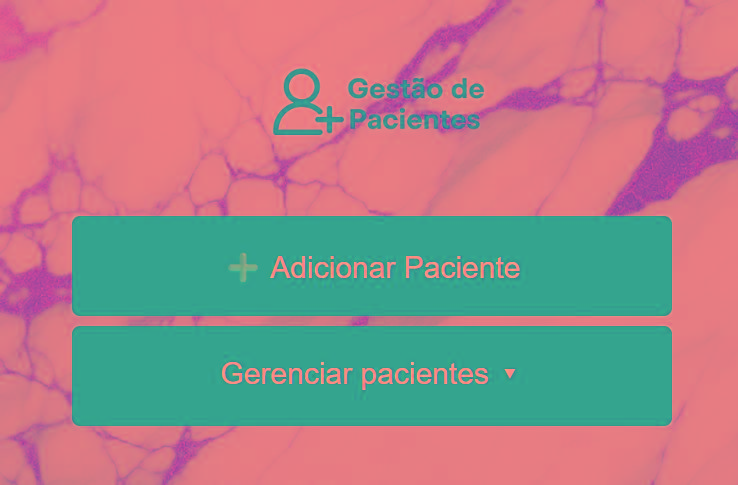
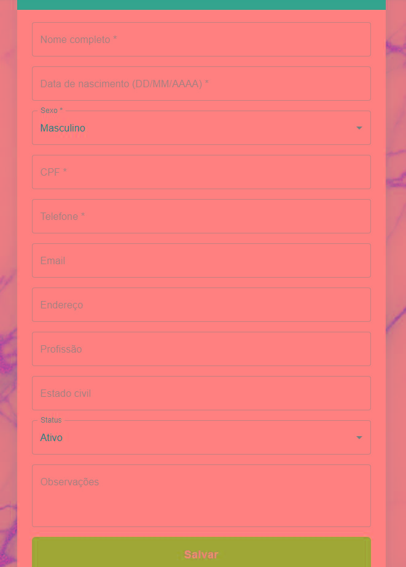
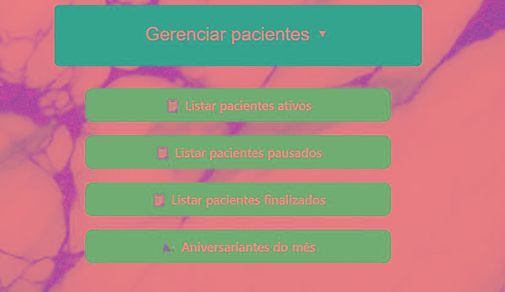
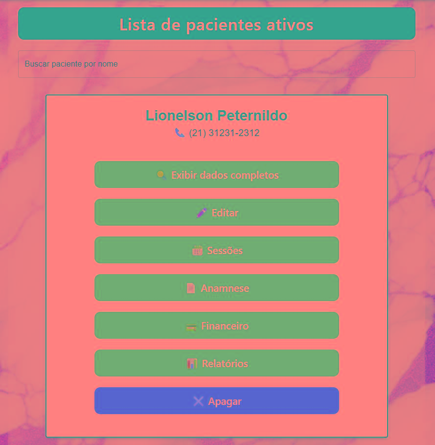

Documentação do Projeto React + Electron – Equilibra Manager
src/ – Código-fonte principal
├── assets/ – Imagens e fontes utilizadas no frontend
├── db/ – Lógica de acesso ao banco SQLite com better-sqlite3
├── renderer/ – Componentes visuais e páginas
├── services/ – Serviços que chamam a API (preload)
├── types/ – Interfaces e types globais
├── preload.ts – Comunicação frontend/backend via contextBridge
└── index.ts – Entrypoint principal com ipcMain e janelas Estrutura completa:
equilibraManager1/
├── .webpack/ # Gerado pelo Electron Forge (build final)
├── documentacao/ # Pasta auxiliar (PDFs, .mm, docs gerados)
├── node_modules/ # Dependências instaladas via npm
├── src/ # PASTA PRINCIPAL DO CÓDIGO FONTE
│ ├── assets/
│ │ ├── fonts/ # Fontes personalizadas
│ │ └── images/ # Imagens usadas no layout (backgrounds, logos)
│ ├── db/
│ │ ├── database.ts # Inicializa e conecta o better-sqlite3
│ │ ├── paciente.ts # CRUD SQL para Paciente
│ │ └── sessao.ts # CRUD SQL para Sessão
│ ├── renderer/ # Código que roda no frontend (React)
│ │ ├── components/ # Componentes reutilizáveis
│ │ │ ├── FormularioCard.tsx
│ │ │ ├── VoltarGlobal.tsx
│ │ │ ├── XPCPFField.tsx
│ │ │ ├── XPDateField.tsx
│ │ │ └── XPPhoneField.tsx
│ │ ├── layouts/ # Layouts e wrappers de páginas (se houver)
│ │ │ ├── MainLayout.tsx
│ │ ├── pages/
│ │ │ ├── Agenda/
│ │ │ │ ├── calendario.tsx # Tela de calendário principal com grid
│ │ │ │ ├── calendario2.txt
│ │ │ │ └── AgendaModule.css
│ │ │ ├── Paciente/
│ │ │ │ ├── adicionar.tsx
│ │ │ │ ├── editar.tsx
│ │ │ │ ├── index.tsx
│ │ │ │ ├── listar.tsx
│ │ │ │ └── PacienteModule.css
│ │ │ ├── Painel/
│ │ │ │ └── (em construção ou estático)
│ │ │ └── Sessao/
│ │ │ └── novaSessao.tsx # Tela de criação de sessões
│ │ ├── services/ # Comunicação com preload (IPC)
│ │ │ ├── pacienteService.ts
│ │ │ └── sessaoService.ts
│ │ ├── styles/ # Estilos globais (Colors.ts etc.)
│ │ └── Splash.tsx / Splash.css # Tela inicial do app
│ ├── types/ # Tipagens globais e interfaces
│ │ ├── assets.d.ts
│ │ ├── globals.d.ts # window.api + tipos para preload
│ │ ├── Paciente.ts # Interface do paciente
│ │ └── Sessao.ts # Interface da sessão
│ ├── App.tsx # Root component da aplicação React
│ ├── index.html # HTML base (Electron carrega isso)
│ ├── index.ts # Entry point main process Electron
│ ├── preload.ts # expõe API via contextBridge (ipcRenderer)
│ └── renderer.tsx # Entry point do renderer (React)
├── .eslintrc.json # Regras ESLint
├── .gitignore
├── forge.config.ts # Configuração do Electron Forge
├── tsconfig.json # Configuração TypeScript
├── package.json # Configurações do npm (scripts e dependências)
├── README.md # Introdução ao projeto
├── webpack.main.config.ts # Webpack para processo principal (Electron)
├── webpack.renderer.config.ts # Webpack para frontend React
├── webpack.plugins.ts
└── webpack.rules.ts



